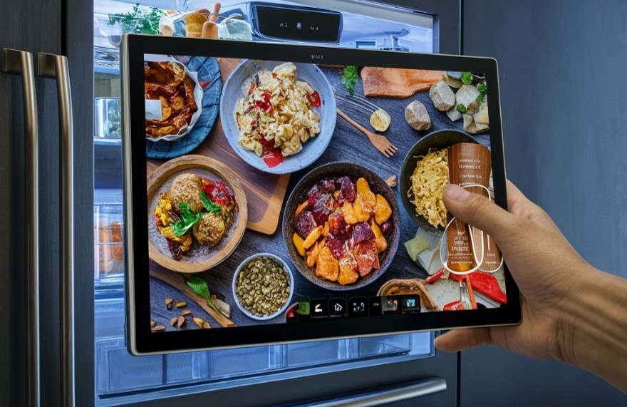
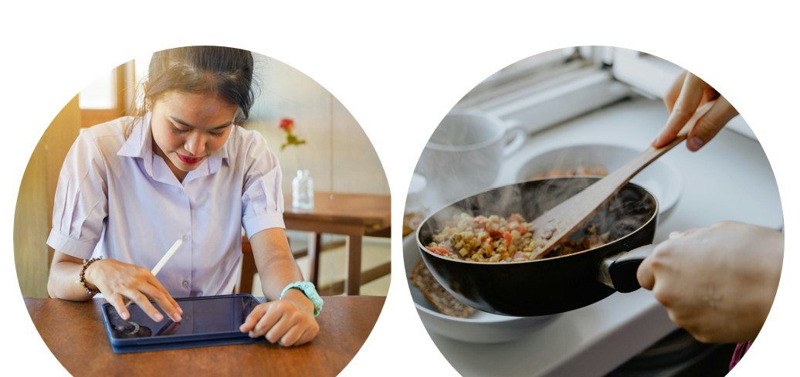
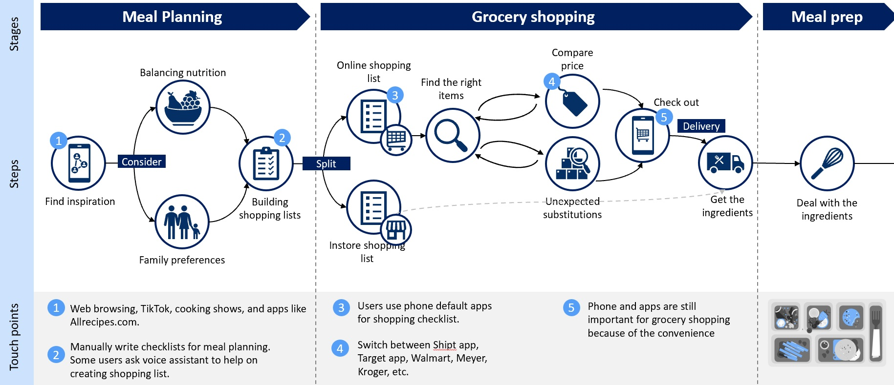
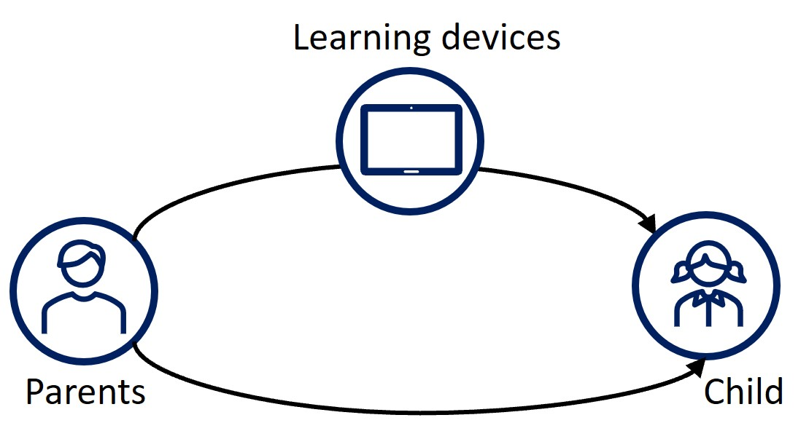
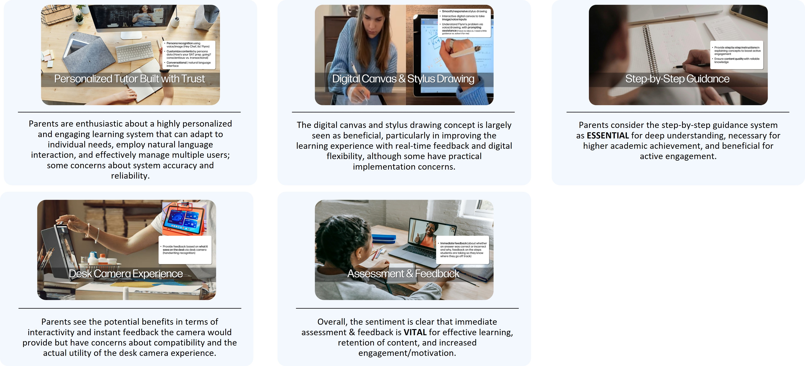
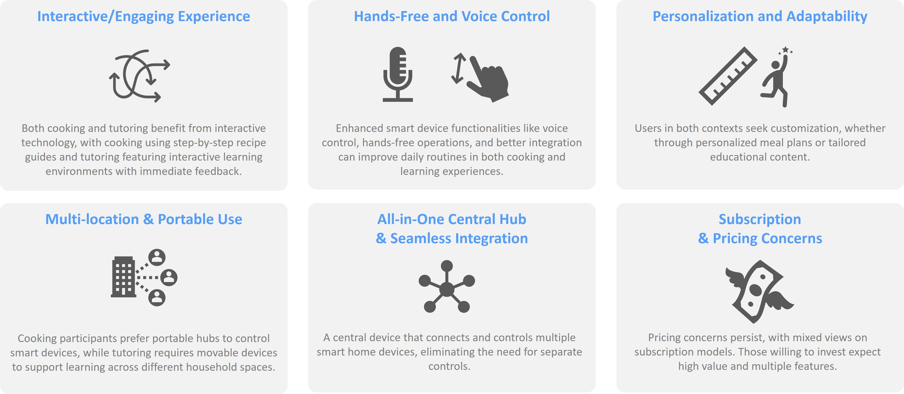
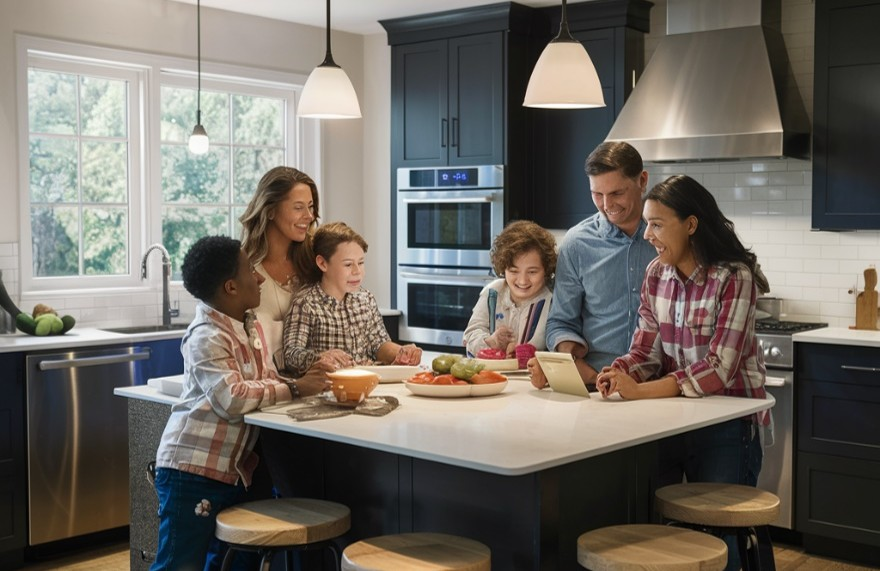

AI-Powered Smart Home Assistant — Concept Validation
This project explored an AI-powered smart home device designed to enhance two core household experiences: cooking and learning. The device combined a large touchscreen display, a downward-facing desk camera, stylus support, and multi-modal interaction (voice, gesture, touch) to provide hands-free guidance in the kitchen and personalized tutoring support for children at home. As the lead researcher, I conducted in-depth user interviews with 16 participants across both experience tracks to validate concept direction and surface key design requirements.
I led the end-to-end research design for this concept validation — from crafting screeners and research plans for two distinct user groups, to conducting one-on-one interviews, synthesizing findings, and delivering actionable experience recommendations to the core product team.
— Lead UX Researcher
- Screener Survey Design
- Research Plan
- In-depth Interview
- Concept Validation
- Feature Prioritization
- User Insight
- Persona Development
- Actionable Recommendations
Approach

Step 1. Dual-Track Research Design & Recruitment
Because the device addressed two very different contexts — kitchen and study — I designed two separate research tracks with distinct screeners and interview protocols. For the cooking track, I recruited tech-savvy home cooks who manage dietary needs and meal planning for their households. For the tutoring track, I recruited parents actively involved in their children's homework and learning. Across both tracks, I targeted participants aged 33–50, household income $100K+, and a strong inclination toward adopting premium technology — reflecting the device's intended market. Eight qualified participants were recruited per track.

Step 2. Cooking Experience — User Interviews
I conducted one-on-one interviews with 8 participants to understand their daily cooking challenges and validate the concept's core features: AI-guided recipe steps, personalized meal planning based on dietary preferences and allergies, camera-assisted grocery management, and hands-free control via voice and gestures. Participants consistently emphasized the need for time-saving solutions, frustration with managing family dietary restrictions, and the importance of large, glanceable displays and hands-free operation while actively cooking. The desk camera feature — recognizing ingredients and confirming portions in real time — was received as a strong differentiator.

Step 3. Tutoring Experience — User Interviews
For the tutoring track, I interviewed 8 parents to explore their pain points with current homework help tools and validate key experience concepts: personalized AI tutoring with voice and face recognition, a digital canvas with stylus input for solving problems by hand, step-by-step guided explanation (without directly showing the answer), and immediate feedback and assessment. A core finding was that parents strongly preferred scaffolded guidance over answer-giving — they wanted the device to teach reasoning, not shortcut it. Mobility also emerged as a critical requirement, as children needed to use the device across multiple rooms and settings.

Step 4. Feature Validation & Concept Testing
Across both tracks, I evaluated specific product concepts by presenting feature scenarios during interviews and probing for reactions, concerns, and willingness to adopt. For cooking, I tested the camera-based grocery cart scanning and AI price comparison features, voice-guided step narration, and gesture controls (open palm to pause, wave to continue). For tutoring, I tested the digital canvas with stylus drawing, the desk camera's handwriting recognition feedback, and a gamified leaderboard system for peer motivation. Privacy and data security emerged as a cross-cutting concern in both tracks — participants were open to AI personalization but wanted clear control over what the device saw and remembered.

Step 5. Synthesis & Experience Recommendations
I synthesized findings from both tracks into a unified research report, surfacing shared principles alongside experience-specific requirements. Shared principles included: the primacy of personalization (family profiles, dietary preferences, learning levels), privacy transparency as a prerequisite for trust, and the expectation that the device would reduce cognitive load rather than add to it. Track-specific recommendations covered form factor priorities (large display and speaker stand for cooking; portability and stylus for tutoring), interaction modality preferences, and feature prioritization for the initial product release — delivered directly to the product and industrial design teams.
Result
16
Interview Participants
2
Hero Experience Tracks
2
Target User Groups

Through a dual-track interview study, this research validated the core value proposition of an AI-powered smart home device and uncovered the nuanced, experience-specific requirements for two high-impact use cases. The findings gave the product team a grounded, user-backed foundation for making decisions on form factor, interaction design, feature scope, and trust-building mechanisms — bringing the concept meaningfully closer to a product experience that genuinely fits into people's homes and lives.